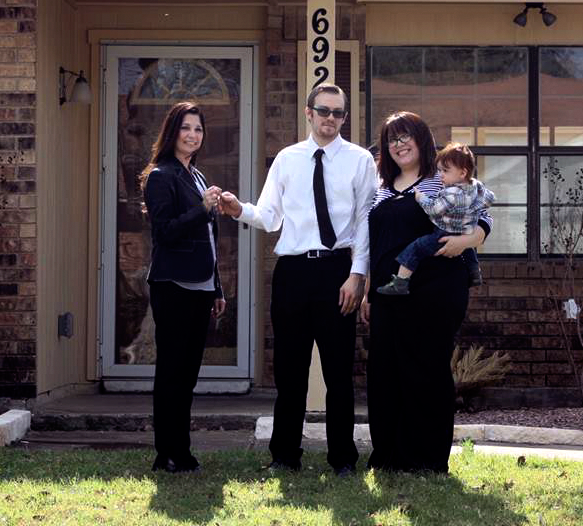

Testimonials

I would recommend Diana Gracia because she has a lot of knowledge about the structure of homes, she knows which homes are good deals and which ones are bad deals. The first house that we went to see, looked great from the outside but when we entered the master bedroom she saw a big crack in the ceiling and pointed out quickly that the house had foundation issues. We came from Puerto Rico and in our country the houses don't have foundation issues so we didn't know anything about it. She took the time to explain to us why that house couldn't be an option for us. She knows very well all the city specifications. We were not afraid of losing money in the process because Diana took care of every little detail. She is very professional and has a good team to recommend in the home buying process. She is honest and a very humble person. She always puts that extra effort to obtain the most important family goal: to become a home owner. When we arrived to this counrty we were lonely. We didn't have family or friends. We were homeless and in a program named Adopt a Family for almost two years. God sent us Angels in all this time to help and take care of us and we think that Diana is one of those Angels. Without her help and knowledge as a realtor we would be homeless. Thanks Diana we finally completed the process and we have our home. Now we can feel what it is to have our "home sweet home".
Finally, we want to say thank you to Diana Gracia for all the time that you gave us to explain, orientate and help us obtain our first home. We will never forget your name, your face and all that you have done for us. God will help you as you continue helping more and more families especially Latin or Hispanic families.
E.M.
When I first started looking for a home, I did go to another Realtor. After 3 months working with him I found out that I could not buy a home. I lost money but I learn one thing, choose your realtor right. After 2 months I decided to try again. I was refer to Mrs. Diana Gracia. As soon as I started working with her, I saw that she knew what she was doing. I felt very glad and comfortable with her. We saw 3 homes and made an offer on one. She offer for the seller to pay most of the closing cost. She really know how to negotiate to help you bring less money. I thank you very much for all of your help and I know that without you, I would probably renting an apartment. You gave me hope. God bless
E.E.
When I first met Realtor Diana Gracia, I ask for her to list my home. She sold it in 45 days. After that my
wife and I went to stay in apartment. We both thought that we could live in an apartment for 6 months
and then we would call Diana to help us buy a home. After 2 months we were ready to start looking.
Diana found us the home in a couple of days. We moved in and we are very happy.
I would recommend Realtor Diana Gracia to anyone who is looking to buy or sell their house. She is very
professional and very honest. She works hard for you and makes you feel at ease. My family thanks you
from the bottom of our heart. We would not be enjoying our beautiful home if it wasn't for you.
Remember you are welcome to stop by our home anytime you want too. You are part of our family.
A.S.
I recommend Mrs. Diana Gracia to anyone that is buying a home. She is very familiarize with all the
government programs. When we bought our home, we were told that we would need to bring much
more money and because Diana negotiate for the seller to pay more and with she knowing about the
first time home buyer program, we could by a home that we ended building with a builder. Right know
I pay less every month for a home than I was paying renting an apartment Thank you Mrs. Gracia for
helping us in buying a home. My family and I are very happy.
H.G.
I would recommend Mrs. Gracia to anyone that is a first time home buyer. I met her in a class that the city had for 1sl Time Home Buyers. She was teaching every one of what to look when you are looking for a home. Her expertise and knowledge in helping 1st time home buyers was not hard for me to hire her to represent me in buying a home. Thank you Mrs. Gracia for everything you did for us. I will tell my friends and family about you.
F.U.
I want to thank you for all of your help in finding my home! You were very patient & responded so fast. You are very knowledgeable. I appreciate that you made me feel comfortable talking to you and asking you questions. I will definitely recommend you to any one I hear is buying a home!
Again thank you so much!
B.G.